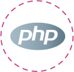
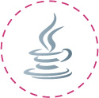

GeekHub — це проект, що надає можливість отримати практичні знання та навички в сфері розробки програмного забезпечення. На відміну від традиційної освіти, викладачі GeekHub працюють з новітніми технологіями у провідних софтверних компаніях, тому слухачі GeekHub отримують тільки актуальні знання. Якщо ти зацікавлений — запрошуємо ознайомитись з деталями проекту.
наші курси
-
Frontend + CMS
Цей курс допоможе вам навчитися створювати веб сайти на основі системи керування контентом. Все, від скінування дизайну до підключення CMS. Цей курс дасть вам чудовий старт для фріланса або роботи в компанії.
-
Advanced CMS
Необхідні та поглибленні знання в системах керування контентом. Якщо ви хочете робити вебсайти як професіонал, цей курс для вас. Особливості різних CMS, використання та написання плагінів та компонентів, інтеграція із соціальними мережами та третьосторонніми сервісами.
-

Advanced PHP
Для тих хто хоче розвити свої базові навички в PHP. Курс заглиблюється в вивчення ООП, MVC та фреймворку Symfony.
-

Basic Java
Java -- це основа ентерпрайз технологій. Ви ознайомитесь із мовою, базовою структурю SDK основами технологій на Java. Курс вимагає підвищеного рівня самостійної роботи але отриманні знання приносять особливу винагороду в роботі.
-
Java for Android
Розробка під мобільні технології все більше набирає популярності. GeekHub починає із найпопулярнішої відкритої платформи Android.
-
Project Management
Щоб стати досвідченим менеджером проектів потрібні роки спроб та помилок. Geekhub дає вам можливість набути практичних навичок та уникнути неприємних ситуацій в реальній роботі. Ми навчимо вас розуміти бізнес, відносини із клієнтами і девелоперами і звичайно методології ведення проектів.
-
Quality Assurance
Контроль якості проектів -- важлива частина процесу розробки. Цей курс навчить вас систематизувати та автоматизувати процес тестування, підвищити якість та швидкість виконання проектів в компанії.
-
Technical English
Нинішні ринкові умови вимагають робочого знання англійської мови і вільним використанням технічних термінів. Немає кращого місця щоб підтягнути ці навички, ніж курс Techical English на GeekHub! Курс викладає Tim Phipps, англієць із науковим ступенем у англійскій літературі.